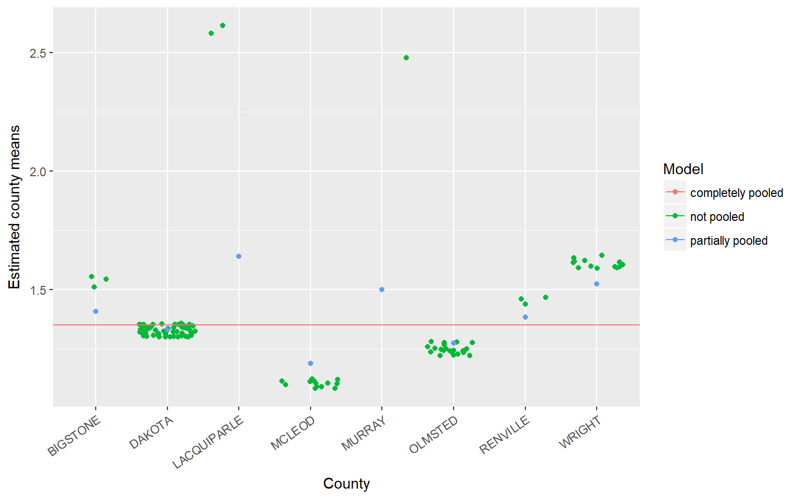
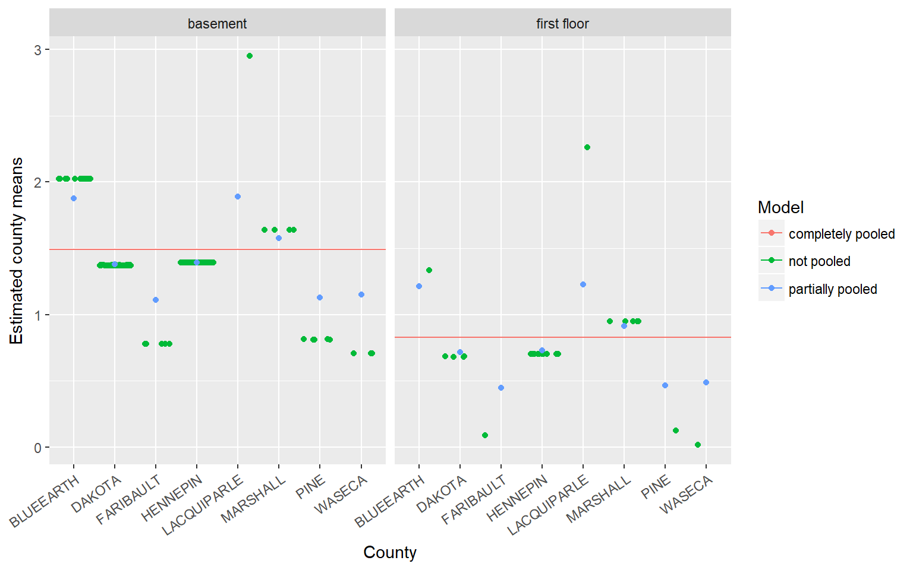

Chapter 8 Random Intercept Models
To highlight the benefits of random intercepts models we will compare three linear regression models: complete pooling, no pooling, and the random intercept model (AKA partial pooling). We’ll use a dataset named radon from the rstanarm package. Radon is a radioactive gas that naturally occurs in soils around the U.S. As radon decays it releases other radioactive elements, which stick to, amongst other things, dust particles commonly found in homes. The EPA believes radon exposure is one of the leading causes of cancer in the United States.
The dataset contains \(N=919\) observations, each measurement taken within a home that is located within one of the \(J=85\) sampled counties in Minnesota. The first six rows of the dataframe show us that the county Aitkin has variable levels of \(log(radon)\). Each of the three models will predict \(log(radon).\)
data(radon, package="rstanarm")
head(radon)
## floor county log_radon log_uranium
## 1 1 AITKIN 0.83290912 -0.6890476
## 2 0 AITKIN 0.83290912 -0.6890476
## 3 0 AITKIN 1.09861229 -0.6890476
## 4 0 AITKIN 0.09531018 -0.6890476
## 5 0 ANOKA 1.16315081 -0.8473129
## 6 0 ANOKA 0.95551145 -0.8473129The plot below displays the overall mean as the complete pooling estimate (solid, horizontal line), the no pooling and partial pooling estimates for 8 randomly selected counties contained in the radon data. The amount of shrinkage from the partial pooling fit is determined by a compromise between the county level sample size, the variation amongst the counties, and the variation within the counties. Over simplifying, we can see that counties with smaller sample sizes are shrunk more towards the overall mean, while counties with larger sample sizes are shrunk less. The fitted values corresponding to different observations within each county of the no-pooling model are jittered to help the eye determine approximate sample size within each county – estimates of variation within each county should not be determined from this arbitrary jittering of points.

The three models considered set \(y_n=log(radon)\), and \(x_n\) records floor for homes \(n=1, \ldots, N\). The complete pooling model pools all counties together to give them one single estimate of the \(log(radon)\) level, \(\hat{\alpha}\). Note that the error term \(\epsilon_n\) may represent variation due to measurement error, within-house variation, and/or within-county variation. Fans of the random intercept model accept this as a fault of the completely pooled model.
\[\begin{equation*} \begin{split} y_n = \alpha & + \epsilon_n \\ & \epsilon_n \sim N(0, \sigma_y^2) \end{split} \end{equation*}\]The no pooling model gives each county an independent estimate of \(log(radon\)), \(\hat{\alpha}_{j[n]}\). Read the subscript \(j[n]\) as home \(n\) is nested within county \(j\). Hence, all homes in each county get their own independent estimate of \(log(radon)\). Here again, one might argue that the error term captures too much noise.
\[\begin{equation*} \begin{split} y_n = \alpha_{j[n]} & + \epsilon_n \\ \epsilon_n & \sim N(0, \sigma_y^2) \end{split} \end{equation*}\]The random intercept model, better known as the partial pooling model, gives each county an intercept term \(\alpha_j[n]\) that varies according to its own error term, \(\sigma_{\alpha}^2\). This error term measures within-county variation, thus separating measurement error from county level error. This multi-level modeling shares information amongst the counties to the effect that the estimates \(\alpha_{j[n]}\) are a compromise between the completely pooled and not pooled estimates. The compromise is data dependent. When a county has a relatively smaller sample size and/or the variance \(\sigma^2_y\) is larger than the variance \(\sigma^2_{\alpha}\), estimates are shrunk more from the not pooled estimates towards to completely pooled estimate.
\[\begin{equation*} \begin{split} y_n = \alpha_{j[n]} & + \epsilon_n \\ \epsilon_n & \sim N(0, \sigma_y^2) \\ \alpha_j[n] & \sim N(\mu_{\alpha}, \sigma_{\alpha}^2) \end{split} \end{equation*}\]Fit the not pooled or partially pooled models in R with the following code.
fit_nopool <- lm(log_radon~-1+county, data=radon)
fit_partpool <- lme4::lmer(log_radon ~ (1 |county), data=radon)A similar sort of shrinkage effect is seen with covariates included in the model. Consider the covariate \(floor\), which takes on the value \(1\) when the radon measurement was read within the first floor of the house and \(0\) when the measurement was taken in the basement. In this case, county means are shrunk towards the mean of the response, \(log(radon)\), within each level of the covariate.
